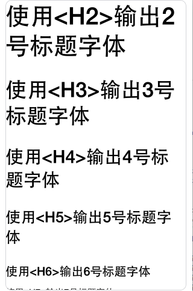
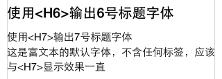
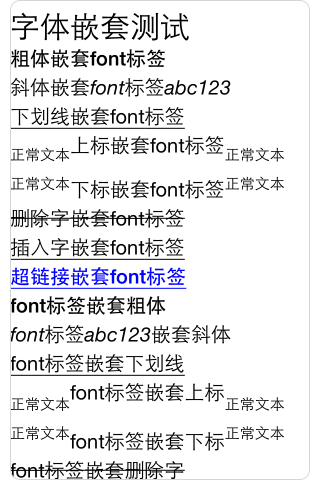
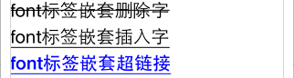
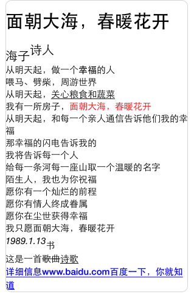
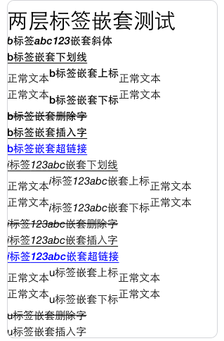
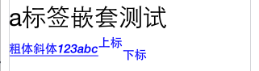
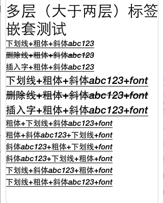

- Introduction
- 1. EMP5.4技术白皮书
- 2. EMP 安全
- 3. Release Note
- 4. EMP产品已知问题列表
-
5.
EMP界面开发规范
- 5.1. 变更记录
- 5.2. FAQ
- 5.3. CSS样式
- 5.4. 属性
-
5.5.
界面标签
- 5.5.1. 控件支持属性和样式对照表
-
5.5.2.
基础标签
- 5.5.2.1. A
- 5.5.2.2. B & Strong
- 5.5.2.3. Body
- 5.5.2.4. Br
- 5.5.2.5. Div
- 5.5.2.6. Form
- 5.5.2.7. I & Em
- 5.5.2.8. Img
- 5.5.2.9. InputButton
- 5.5.2.10. InputCheckbox
- 5.5.2.11. InputHidden
- 5.5.2.12. InputPassword
- 5.5.2.13. InputRadio
- 5.5.2.14. InputSegment
- 5.5.2.15. InputSwitch
- 5.5.2.16. InputText
- 5.5.2.17. Label
- 5.5.2.18. Richtext
- 5.5.2.19. Select & Option
- 5.5.2.20. Table & Tr & Td & Th
- 5.5.2.21. Webview
- 5.5.3. SDK定制说明
- 5.5.4. 定制标签
- 5.6. 布局与刷新
-
5.7.
Lua
-
5.7.1.
基础Lua库
- 5.7.1.1. accelerometer
- 5.7.1.2. audio
- 5.7.1.3. corp
- 5.7.1.4. database
- 5.7.1.5. document
- 5.7.1.6. file
- 5.7.1.7. gesture
- 5.7.1.8. gps
- 5.7.1.9. history
- 5.7.1.10. http
- 5.7.1.11. json
- 5.7.1.12. kv
- 5.7.1.13. location
- 5.7.1.14. offline
- 5.7.1.15. qrcode
- 5.7.1.16. screen
- 5.7.1.17. system
- 5.7.1.18. timer
- 5.7.1.19. tls
- 5.7.1.20. utility
- 5.7.1.21. video
- 5.7.1.22. window
- 5.7.2. 界面标签支持的Lua接口
- 5.7.3. 动画
- 5.7.4. RYTL脚本库
-
5.7.1.
基础Lua库
- 5.8. javascript
- 5.9. 事件
- 6. EMP开发配置
- 7. Migrate
- 8. EWP5.4管理后台功能说明文档
- 9. EWP API
-
10. EWP DEMO
- 10.1. redis缓存示例
- 10.2. redis数据存储示例
- 11. EWP Manual
- Published using GitBook
富文本
1 概论
富文本（Rich Text），就是有格式的文本。
一般的富文本都支持字体颜色、字体字号、加粗、倾斜等样式。
在传统的做法中，我们都是通过css来控制文本的样式，以使文本样式有丰富的展现。为了简化和方便对文本样式的控制，我们将设计一组富文本标签，这些标签支持最基本的文本格式。
2 富文本标签需求
经过调研，选出的富文本标签如下：
- 字体标签：
<font></font>，其中包括字体属性：字色（color）、字号（size），各个属性可以同时使用在一个标签用法中。 - 粗体标签：
<b></b>标签内文字的字体加粗。 - 斜体标签：
<i></i>标签内文字的字体变斜体。 - 下划线标签：
<u></u>标签内文字加下划线。 - 上标标签：
<sup></sup>标签内文字变为上标。 - 下标标签：
<sub></sub>标签内文字变为下标。 - 删除字标签：
<del></del>标签内文字变为删除字。 - 插入字标签：
<ins></ins>标签内文字变为插入字。 - 超链接标签：
<a></a>标签内文字变为链接，包括属性：- href，指示链接的目标；
- onclick，点击时执行的lua操作，当A标签有onclik属性时，不执行href跳转。
- 图片标签：
<img></img>标签内为一张图片，包括属性：资源地址src，格式参见：src - 字号标签：
<hn></hn>n支持1~6 - 换行标签：
<br/>开始新的一行显示
注：
针对
字号标签，我们规定各级标题对应的字体大小如下：typedef enum CustomHnTagFontSize { CustomH6TagFontSize = 20, CustomH5TagFontSize = 25, CustomH4TagFontSize = 30, CustomH3TagFontSize = 35, CustomH2TagFontSize = 40, CustomH1TagFontSize = 45, } CustomHnTagFontSize;iOS平台下中文斜体使用说明：// Create the framesetter with the attributed string. CTFramesetterRef framesetter = CTFramesetterCreateWithAttributedString(attrString); // Create the frame and draw it into the graphics context CTFrameRef frame = CTFramesetterCreateFrame(framesetter,CFRangeMake(0, 0), path, NULL);经过跟踪，我们发现，使用
attrString(attrString为CFMutableAttributedStringRef类型)创建CTFramesetterRef进而创建CTFrameRef时，系统返回的frame会将设置为中文斜体的字符串重新赋值为默认的字体样式。因此iOS平台下暂不支持中文斜体的显示。Android平台使用说明：1.不支持中文斜体显示，这个属于系统bug（经测试Android 原生浏览器也是不支持中文斜体的）。目前已发现存在此问题的手机：
小米3 、 alcate-OT 986 、 魅族M9 、 华为 Y320-T00 、HTC Desire 7088
2.1 A标签规范
默认状态: 正常状态颜色为蓝色, 点击时颜色为紫色;
如果标签指定字体颜色,则正常状态颜色为指定颜色,点击时颜色仍为紫色.
注:
- 下划线与文字颜色保持一致；
- 因系统限制，Android平台无法实现点击时改变颜色的功能，只需实现点击后颜色为紫色。
示例代码：
<b>粗体</b>
<i>斜体</i>
<u>下划线</u>
<sup>上标</sup>
<sub>下标</sub>
<del>删除字</del>
<ins>插入字 </ins>
<img src="/i/eg_tulip.jpg" width=20 height=20 />
<font color="red" size="4">绝对字体大小为4的红色字</font>
<font color="#00ff00" size="5">绝对字体大小为5的绿色字</font>
<a href="http://www.w3school.com.cn">W3School html在线测试地址[http://www.w3school.com.cn]，欢迎使用！</a>
<h1>使用<H1>输出1号标题字体</h1>
<h2>使用<H2>输出2号标题字体</h2>
<h3>使用<H3>输出3号标题字体</h3>
<h4>使用<H4>输出4号标题字体</h4>
<h5>使用<H5>输出5号标题字体</h5>
<h6>使用<H6>输出6号标题字体</h6>
效果图如下：
3 富文本标签嵌套规范和用例
在实际应用中,往往需要多个标签的嵌套，实现许多复杂的页面展示效果，以完成一个任务。目前富文本中关于嵌套标签的规范如下：
不能嵌套的标签有：
<hn>-<hn>（标题的格式已经是固定，无需嵌套）<br /><img>
3.1 Case1:字体嵌套
在目前显示文本中，都可以嵌套<font>标签,如果遇到字体的属性和标签本身的属性冲突，优先使用标签的属性。
示例代码：
<b><font color="#FF0000" size="5">粗体带font标签</font></b><br />
<i><font color="#FF0000" size="3">斜体带font标签</font></i><br />
<u><font color="#00FF00" size="3">下划线带font标签</font></u><br />
段落开始<sup><font color="#FF0000" size="2">上标带font标签</font></sup>段落结束<br />
段落开始<sub><font color="#FF0000" size="4">下标带font标签</font></sub>段落结束<br />
<del><font color="#FF0000" size="2">删除字带font标签</font></del><br /><br />
<ins><font color="#FF0000" size="2">插入字带font标签</font></ins><br />
<a href="http://www.baidu.com"><font color="#FF0000" size="5">超链接带font标签</font></a>
3.2 Case2:标签之间的嵌套
在目前显示文本中，支持各标签的合理多层嵌套
但是有些嵌套不符合使用习惯，不建议或不支持使用：
<del>与<ins>因显示效果一致不建议使用；<sub>与<sup>因显示效果冲突不支持使用；<a>与<del>、<ins>、<u>因不符合使用习惯不建议使用；<sub>、<sup>与<ins>、<del>、<a>因不符合使用习惯不建议使用。
示例代码：
<b><i>粗体嵌套斜体</i></b><br />
<i><b>斜体嵌套粗体</b></i><br />
<b><i><font color="#FF0000" size="2">粗体嵌套斜体最后嵌套font(注意font是最后的嵌套层次，用来改变最后的字体格式)</font></i></b><br />
<u><b><i><font color="#FF0000" size="2">下划线嵌套粗体嵌套斜体最后嵌套font</font></i></b></u><br />
<del><b><i><font color="#FF0000" size="2">删除线嵌套粗体嵌套斜体嵌套font</font></i></b></del><br />
<ins><b><i><font color="#FF0000" size="2">插入字嵌套粗体嵌套斜体嵌套font</font></i></b></ins><br />
4 报文格式
richtext为富文本标签名,富文本内容由cdata区域包含.
<richtext class ="richText1" name ="richText">
<![CDATA[
<b>粗体</b>
<i>斜体</i>
<u>下划线</u>
<sup>上标</sup>
<sub>下标</sub>
<del>删除字</del>
<ins>插入字 </ins>
<img src="/i/eg_tulip.jpg" width=20 height=20 />
<font color="red" size="4">绝对字体大小为4的红色字</font>
<font color="#00ff00" size="5">绝对字体大小为5的绿色字</font>
<a href="http://www.w3school.com.cn">W3School html在线测试地址[http://www.w3school.com.cn]，欢迎使用！</a>
<h1>使用<H1>输出1号标题字体</h1>
<h2>使用<H2>输出2号标题字体</h2>
<h3>使用<H3>输出3号标题字体</h3>
<h4>使用<H4>输出4号标题字体</h4>
<h5>使用<H5>输出5号标题字体</h5>
<h6>使用<H6>输出6号标题字体</h6>
<h7>使用<H7>输出7号标题字体</h7>
]]>
</richtext>
5 Example
5.1 标签测试
测试报文
<body>
<div>
<richtext name ="richText">
<![CDATA[
<font size="30">标签测试</font><br/>
<b>粗体</b><br/>
<i>斜体123abc</i><br/>
<u>下划线</u><br/>
正常文本<sup>上标</sup>正常文本<br/>
正常文本<sub>下标</sub>正常文本<br/>
<del>删除字</del><br/>
<ins>插入字</ins><br/>
<img src="animation.png" width=20 height=20 /><br/>
<font color="red" size="24">绝对字体大小为24的红色字</font><br/>
<font color="#00ff00" size="15">绝对字体大小为15的绿色字</font><br/>
<a href="http://www.w3school.com.cn">W3School html在线测试地址[http://www.w3school.com.cn]，欢迎使用！</a><br/>
<h1>使用<H1>输出1号标题字体</h1>
<h2>使用<H2>输出2号标题字体</h2>
<h3>使用<H3>输出3号标题字体</h3>
<h4>使用<H4>输出4号标题字体</h4>
<h5>使用<H5>输出5号标题字体</h5>
<h6>使用<H6>输出6号标题字体</h6>
<h7>使用<H7>输出7号标题字体</h7><br/>
这是富文本的默认字体，不含任何标签，应该与<H7>显示效果一直<br/><br/><br/><br/>
]]>
</richtext>
</div>
</body>
显示效果


5.2 字体嵌套测试
测试报文
<body>
<div>
<richtext name ="richText">
<![CDATA[
<font size="30">字体嵌套测试</font><br/>
<b><font size="20">粗体嵌套font标签</font></b><br/>
<i><font size="20">斜体嵌套font标签abc123</font></i><br/>
<u><font size="20">下划线嵌套font标签</font></u><br/>
正常文本<sup><font size="20">上标嵌套font标签</font></sup>正常文本<br/>
正常文本<sub><font size="20">下标嵌套font标签</font></sub>正常文本<br/>
<del><font size="20">删除字嵌套font标签</font></del><br/>
<ins><font size="20">插入字嵌套font标签</font></ins><br/>
<a href="http://www.baidu.com.cn"><font size="20">超链接嵌套font标签</font></a><br/>
<font size="20"><b>font标签嵌套粗体</b></font><br/>
<font size="20"><i>font标签abc123嵌套斜体</i></font><br/>
<font size="20"><u>font标签嵌套下划线</u></font><br/>
正常文本<font size="20"><sup>font标签嵌套上标</sup></font>正常文本<br/>
正常文本<font size="20"><sub>font标签嵌套下标</sub></font>正常文本<br/>
<font size="20"><del>font标签嵌套删除字</del></font><br/>
<font size="20"><ins>font标签嵌套插入字</ins></font><br/>
<font size="20"><a href="http://www.baidu.com.cn">font标签嵌套超链接</a></font><br/><br/><br/><br/>
]]>
</richtext>
</div>
</body>
显示效果


5.3 集合测试
测试报文
<body>
<div>
<richtext name ="richText">
<![CDATA[
<font size="30">集合测试</font><br/>
<h4>面朝大海，春暖花开</h4><br/>
<font size="20">海子<sup>诗人</sup></font><br/>
<font>从明天起，做一个<b>幸福</b>的人<br/>
<i>喂马、劈柴，周游世界</i><br/>
从明天起，<u>关心粮食和蔬菜</u><br/>
我有一所房子，<font color="red">面朝大海，春暖花开</font><br/>
从明天起，和每一个亲人通信 告诉他们我的幸福<br/>
那幸福的闪电告诉我的<br/>
我将告诉每一个人<br/>
给每一条河每一座山取一个温暖的名字<br/>
陌生人，我也为你祝福<br/>
愿你有一个灿烂的前程<br/>
愿你有情人终成眷属<br/>
愿你在尘世获得幸福<br/>
我只愿面朝大海，春暖花开<br/>
<i>1989.1.13<sub>书</sub></i><br/>
这是一首<del>歌曲</del><ins>诗歌</ins><br/>
<a href="http://www.baidu.com">详细信息 www.baidu.com 百度一下，你就知道</a></font><br/><br/><br/><br/>
]]>
</richtext>
</div>
</body>
显示效果

5.4 两层标签嵌套测试
测试报文
<body>
<div>
<richtext name ="richText">
<![CDATA[
<font size="30">两层标签嵌套测试</font><br/>
<b><i>b标签abc123嵌套斜体</i></b><br/>
<b><u>b标签嵌套下划线</u></b><br/>
正常文本<b><sup>b标签嵌套上标</sup></b>正常文本<br/>
正常文本<b><sub>b标签嵌套下标</sub></b>正常文本<br/>
<b><del>b标签嵌套删除字</del></b><br/>
<b><ins>b标签嵌套插入字</ins></b><br/>
<b><a href="http://www.baidu.com.cn">b标签嵌套超链接</a></b><br/>
<i><u>i标签123abc嵌套下划线</u></i><br/>
正常文本<i><sup>i标签123abc嵌套上标</sup></i>正常文本<br/>
正常文本<i><sub>i标签123abc嵌套下标</sub></i>正常文本<br/>
<i><del>i标签123abc嵌套删除字</del></i><br/>
<i><ins>i标签123abc嵌套插入字</ins></i><br/>
<i><a href="http://www.baidu.com.cn">i标签123abc嵌套超链接</a></i><br/>
正常文本<u><sup>u标签嵌套上标</sup></u>正常文本<br/>
正常文本<u><sub>u标签嵌套下标</sub></u>正常文本<br/>
<u><del>u标签嵌套删除字</del></u><br/>
<u><ins>u标签嵌套插入字</ins></u><br/>
<u><a href="http://www.baidu.com.cn">u标签嵌套超链接</a></u><br/>
<del><a href="http://www.baidu.com.cn">del标签嵌套超链接</a></del><br/>
<ins><a href="http://www.baidu.com.cn">ins标签嵌套超链接</a></ins><br/><br/><br/><br/>
]]>
</richtext>
</div>
</body>
显示效果


5.5 a标签嵌套测试
测试报文
<body>
<div>
<richtext name ="richText">
<![CDATA[
<font size="30">a标签嵌套测试</font><br/>
<a href="http://www.baidu.com"><b>粗体</b><i>斜体123abc</i><sup>上标</sup><sub>下标</sub>
</a><br/><br/><br/><br/>
]]>
</richtext>
</div>
</body>
显示效果

5.6 多层（大于两层）标签嵌套测试
测试报文
<body>
<div>
<richtext name ="richText">
<![CDATA[
<font size="30">多层（大于两层）标签嵌套测试</font><br/>
<u><b><i>下划线+粗体+斜体abc123</i></b></u><br/>
<del><b><i>删除线+粗体+斜体abc123</i></b></del><br/>
<ins><b><i>插入字+粗体+斜体abc123</i></b></ins><br/>
<u><b><i><font size="20">下划线+粗体+斜体abc123+font</font></i></b></u><br/>
<del><b><i><font size="20">删除线+粗体+斜体abc123+font</font></i></b></del><br/>
<ins><b><i><font size="20">插入字+粗体+斜体abc123+font</font></i></b></ins><br/>
<b><u><i><font size="15">粗体+下划线+斜体abc123+font</font></i></u></b><br/>
<b><i><u><font size="15">粗体+斜体abc123+下划线+font</font></u></i></b><br/>
<i><b><u><font size="15">斜体abc123+粗体+下划线+font</font></u></b></i><br/>
<i><u><b><font size="15">斜体abc123+下划线+粗体+font</font></b></u></i><br/>
<u><i><b><font size="15">下划线+斜体abc123+粗体+font</font></b></i></u><br/>
<u><b><i><font size="15">下划线+粗体+斜体abc123+font</font></i></b></u><br/><br/><br/><br/><br/>
]]>
</richtext>
</div>
</body>
显示效果

| Date | Note | Modifier |
|---|---|---|
| 2015-09-10 | 修改h7字号为正文默认字号大小 | zhou.changjin |
| 2015-11-23 | 修改Android不支持A标签修改点击时颜色的说明 | zhou.changjin |
| 2015-11-01 | 增加A标签支持onclick属性的说明 | zhou.changjin |